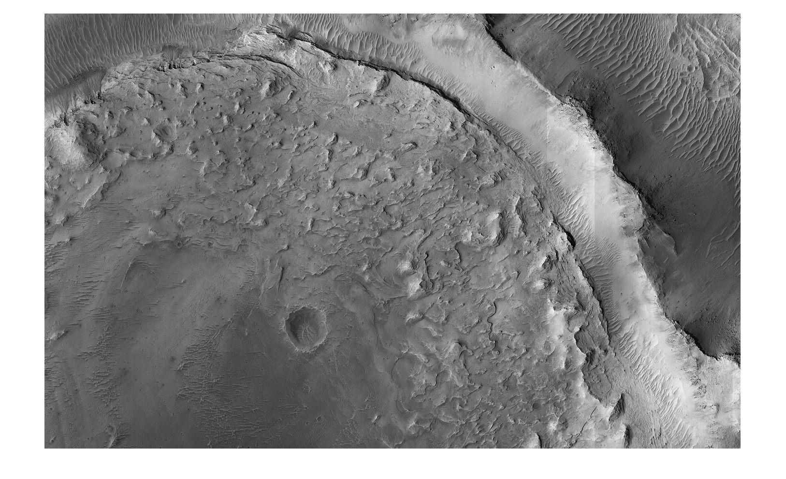
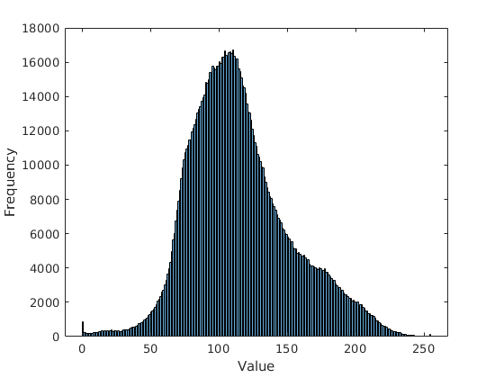
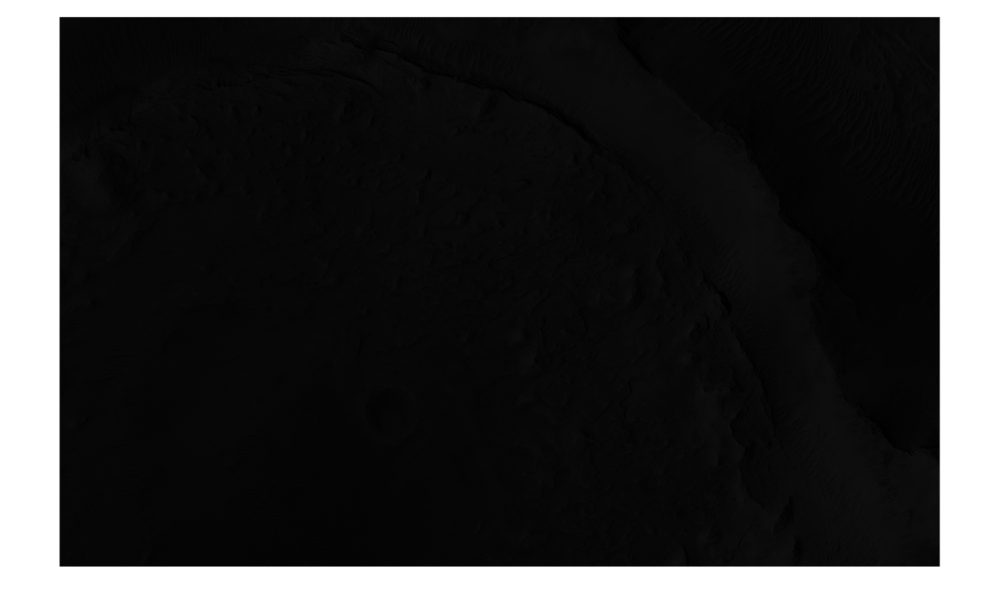
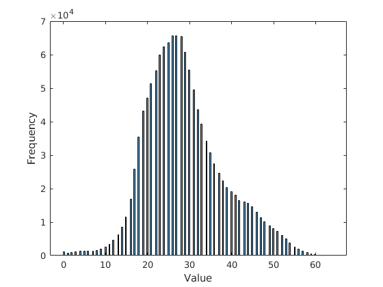
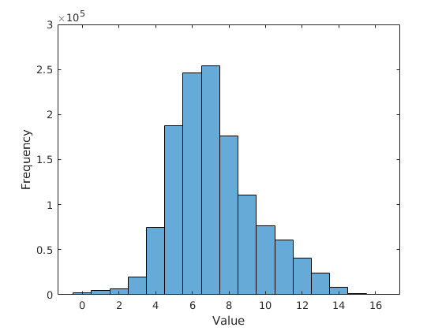
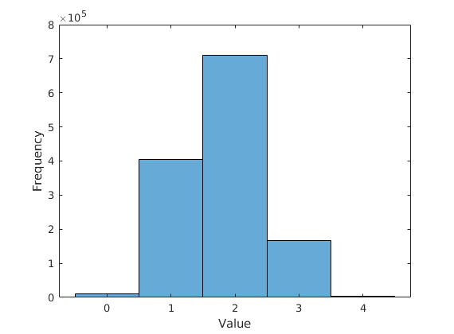

clear;close all; clc;
f = imread('ImgPIA.jpg');
Igray = rgb2gray(f);
reducedImage_6 = uint8((single(Igray)/256)*2^6);
reducedImage_4 = uint8((single(Igray)/256)*2^4);
reducedImage_2 = uint8((single(Igray)/256)*2^2);
disp('Grayscale image');
histogram_features(Igray)
disp('6 Bit image');
histogram_features(reducedImage_6)
disp('4 Bit image');
histogram_features(reducedImage_4)
disp('2 Bit image');
histogram_features(reducedImage_2)
function histogram_features(Igray)
figure;
imshow(Igray);
figure;
x = histogram(Igray);
xlabel('Value')
ylabel('Frequency')
[pixelCounts, graybin] = imhist(Igray);
pixels = sum(pixelCounts);
averagebin = sum(graybin .* (pixelCounts / pixels));
variance = 0;
skew = 0;
kurtosis = 0;
for i=0:1:length(pixelCounts)-1
variance = variance + (i-averagebin)^2 * (pixelCounts(i+1)/pixels);
skew = skew + (i-averagebin)^3 * (pixelCounts(i+1)/pixels);
kurtosis = kurtosis + (i-averagebin)^4 * (pixelCounts(i+1)/pixels)-3;
end
skew = skew * variance ^-3;
kurtosis = kurtosis * variance ^-4;
t = table(averagebin, variance, skew, kurtosis);
t
end
Grayscale image
t =
1×4 table
averagebin variance skew kurtosis
________________ ________________ ____________________ ___________________
115.028027006173 1371.54101618446 1.05677824896143e-05 1.7670486073541e-06
6 Bit image
t =
1×4 table
averagebin variance skew kurtosis
________________ ________________ ____________________ ____________________
28.8819830246914 85.7976244626748 0.000674174042404827 0.000437472981546988
4 Bit image
t =
1×4 table
averagebin variance skew kurtosis
________________ ________________ __________________ __________________
7.22074074074074 5.43755901920439 0.0412787008205884 -0.766156159839631
2 Bit image
t =
1×4 table
averagebin variance skew kurtosis
________________ _________________ _________________ _________________
1.80739351851852 0.447873422303669 0.528206650145689 -19073.4527198493


    